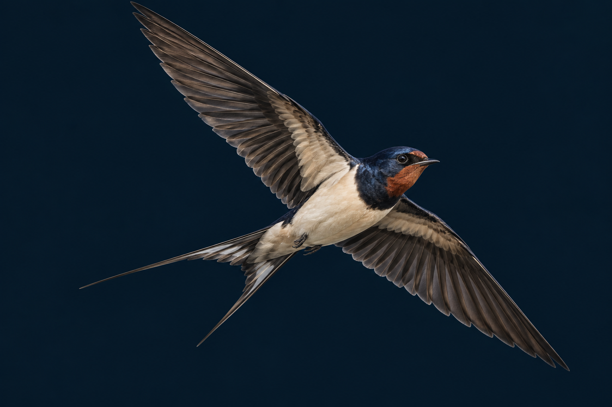
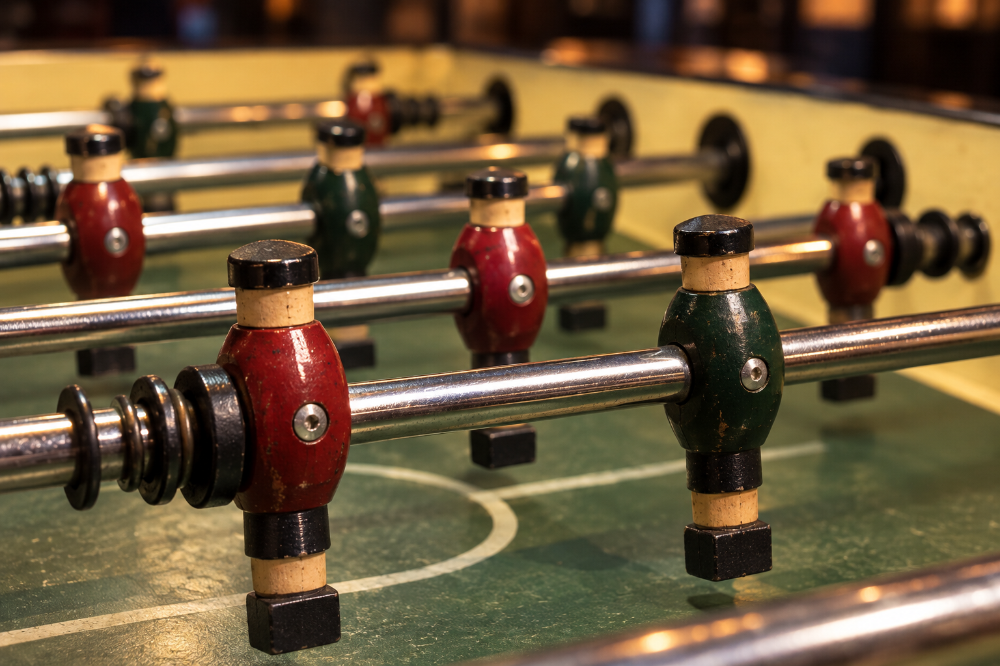
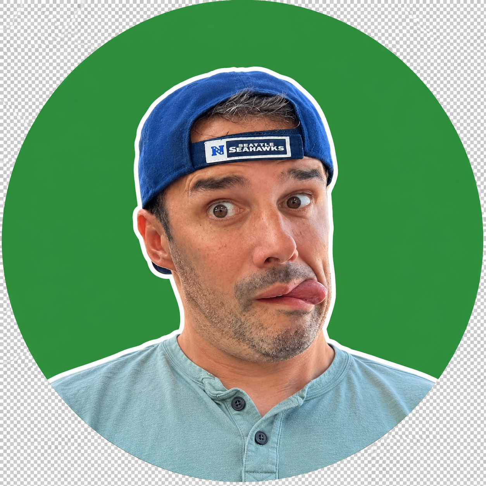
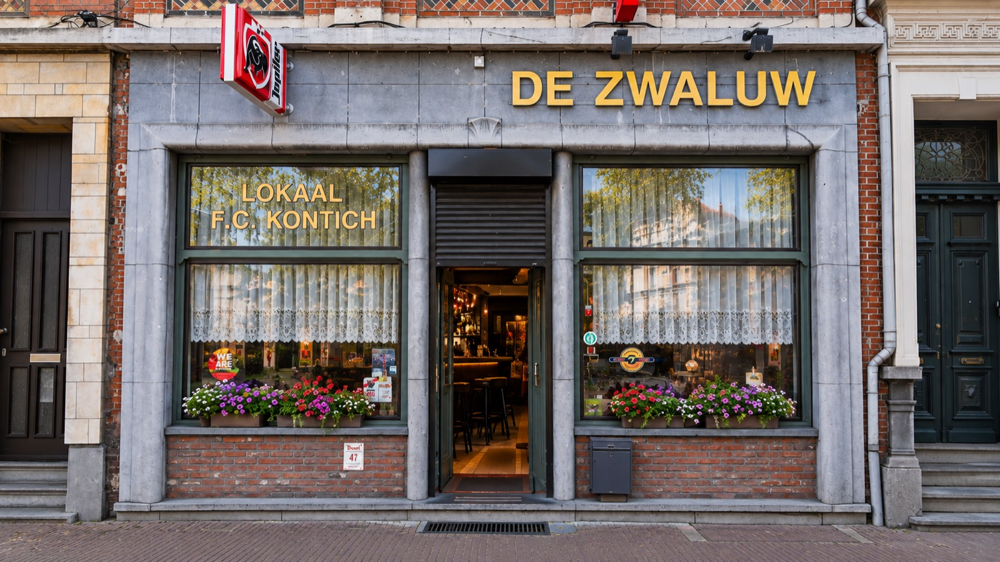

{kind=link}
Peter De Bie
Ranking 2PA7827 ↗

KONTICH · SEIZOEN 2026 / 2027
Samen aan de tafel. Voluit voor de ploeg.
Dit is De Zwaluw.
Alle beker- en competitiewedstrijden · Seizoen 2026–2027
Zet in Google AgendaWedstrijden, uitslagen en individuele punten volgens de ATC-wedstrijdbladen ↗. Het klassement telt de punten van elke speler. Controleer ATC voor wijzigingen.

HOUTEN MANNETJES.
ECHT KARAKTER.
BEKER VAN ATC
Eerste duel verloren in Deurne: 11–7.
De return is thuis op 9 oktober.
Cj’s · Deurne ↗
Café De Zwaluw · Kontich ↗
Algemene ATC-bekerdata. Deelname van De Zwaluw en tegenstanders zijn nog niet bevestigd.
Tien ploegen. Achttien wedstrijden.
Het seizoen ligt voor ons.
Stand op 11 september 2026.
Nog geen competitiewedstrijden gespeeld.
De volgorde volgt ATC; alle ploegen staan gelijk.
| # | TEAM | GS | W | G | V | SETS |
|---|---|---|---|---|---|---|
| 01 | BP Ratten | 0 | 0 | 0 | 0 | 0 |
| 02 | Roadhouse | 0 | 0 | 0 | 0 | 0 |
| 03 | Foosforce | 0 | 0 | 0 | 0 | 0 |
| 04 | Zenakalm | 0 | 0 | 0 | 0 | 0 |
| 05 | NXT | 0 | 0 | 0 | 0 | 0 |
| 06 | De Zwaluw WIJ | 0 | 0 | 0 | 0 | 0 |
| 07 | Halverwegen | 0 | 0 | 0 | 0 | 0 |
| 08 | Y&O | 0 | 0 | 0 | 0 | 0 |
| 09 | Peeke Binne | 0 | 0 | 0 | 0 | 0 |
| 10 | Paradijske (’t) | 0 | 0 | 0 | 0 | 0 |
Elf spelers. Eén De Zwaluw.
Ontmoet onze ploeg voor seizoen 2026–2027.
Klik op een portret
en bekijk de foto groot.

Spelers en rankings zoals vermeld op ATC ↗.

ONZE THUISBASIS
Contact met de ploeg verloopt via het ATC-clubprofiel ↗ (inloggen vereist).
Clubsite voor De Zwaluw. De kalender volgt de algemene ATC-kalender ↗ en de wedstrijdbladen van de ploeg. Gegevens overgenomen op 12 september 2026; deze site wordt niet automatisch gesynchroniseerd. Zwaluwen en tafelvoetbalbeelden zijn gegenereerde sfeerbeelden.
{kind=link}
{kind=link}
{kind=link}
{kind=link}
{kind=link}
{kind=link}
{kind=link}
{kind=link}
{kind=link}